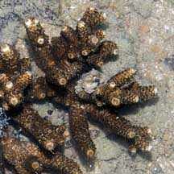
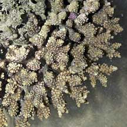
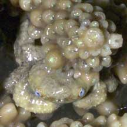

|
|
| crabs text index | photo index |
| Phylum Arthropoda > Subphylum Crustacea > Class Malacostraca > Order Decapoda > Brachyurans > Family Xanthidae |
| Hairy
coral crab Cymo andreossyi Family Xanthidae updated Dec 2019 Where seen? This tiny hairy crab with big blue eyes is sometimes seen on our some of our shores living in branching corals such as Acropora corals (Acropora sp.) and Cauliflower corals (Pocillopora sp.).They are small and well-camouflaged. Features: Body width about 1cm. Body, legs and pincers hairy, a drab beige or grey. It usually has a layer of algae growing on its body. Other tiny crabs that live in corals include the Red coral crab (Trapezia cymodoce) and the Bandit coral crab (Tetralia nigrolineata). Status and threats: Cymo andreossyi is listed as 'Vulnerable' on the Red List of threatened animals of Singapore. |
 Sisters Island, Dec 08  |
 Sisters Island, May 07  |
| Hairy coral crabs on Singapore shores |
On wildsingapore
flickr
|
| Other sightings on Singapore shores |
|
Links
References
|